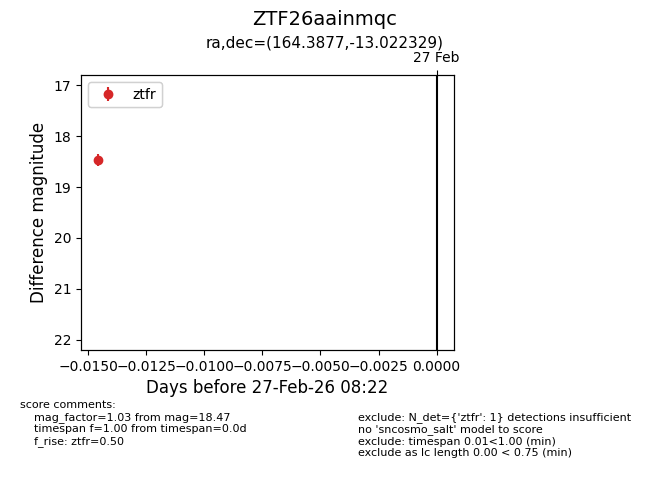
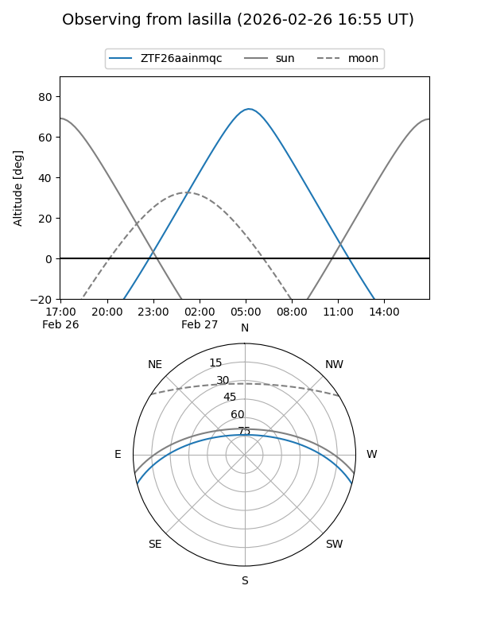
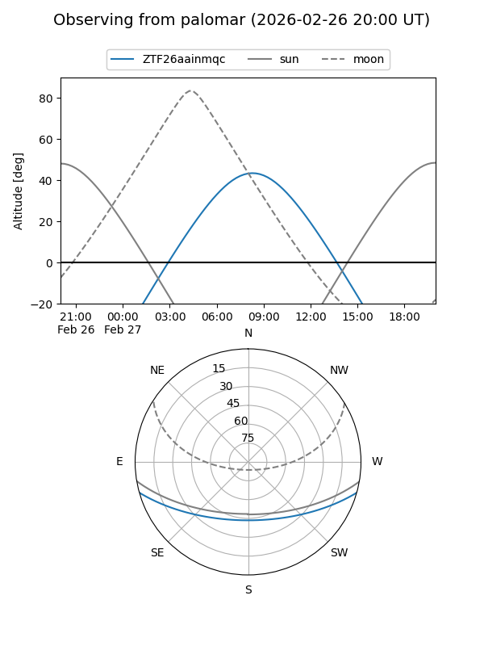

ZTF26aainmqc
Target ZTF26aainmqc at 2026-02-27 08:23
Aliases and brokers:
FINK: link
Lasair: link
ALeRCE: link
alt names
ZTF26aainmqc (ztf,fink_ztf)
Coordinates:
equatorial (ra, dec) = 164.3877,-13.02233
equatorial (HMS+DMS) = 10:57:33.05,-13:01:20.38
galactic (l, b) = (264.7714,+41.26012)
Flags:
Photometry:
last ztfr=18.47
1 ztfr detections
Lightcurve

Visibility


Additional plots